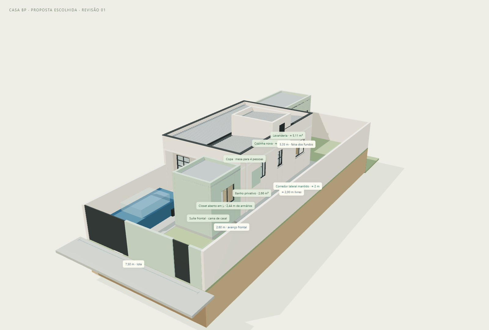

Atualização da alternativa A escolhida pelo proprietário. A casa atual e as quatro alternativas anteriores foram mantidas separadas. Esta revisão acrescenta closet aberto à suíte frontal, integra sala e copa e fecha a faixa esquerda dos fundos para cozinha e lavanderia.
| Ambiente | O que mudou | Dimensão / referência |
|---|---|---|
| Suíte da frente | Mantém o banho privativo da alternativa A. A cama foi deslocada 30 cm para acomodar o closet de passagem. | Avanço de 2,60 m; largura interna compacta de 2,14 m no trecho novo. |
| Closet | Armários abertos em L, com prateleiras, cabideiros e roupas ilustrativas. O ripado marca a transição sem fechar a passagem. | 1,54 m + 0,90 m = 2,44 m lineares; profundidade 0,55 m; passagem nominal de 0,96 m ao pé da cama. |
| Sala | Retirada proposta dos dois pequenos trechos junto à cozinha atual. Sofá, rack e aparador no lugar da antiga mesa. | Passagem central mantida; sem mesa de centro para evitar obstáculo. |
| Copa | Ocupa a antiga cozinha. Mesa de 1,50 × 0,75 m com banco fixo e duas cadeiras. Buffet junto à parede esquerda. | Área original indicada de 7,56 m²; quatro lugares; passagem lateral nominal de 0,82 m com as cadeiras desenhadas. |
| Cozinha nova | Depois da porta de correr existente: bancada principal, pia, cooktop, forno, coifa, geladeira, bancada auxiliar, micro-ondas e armários. | 2,40 × 2,94 m livres, aproximadamente 7,06 m²; bancadas de 0,60 m e faixa nominal de 1,20 m entre elas. Junto à geladeira, cerca de 1,10 m. |
| Lavanderia | No fundo da mesma faixa esquerda, com lavadora, tanque, armário alto, apoio de bancada e varal. Porta interna e saída para o quintal. | 2,40 × 2,13 m livres, aproximadamente 5,11 m². |
A solução inicial é aberta, sem quarto de closet fechado por porta. O conjunto dormitório/closet permanece com cerca de 8,38 m², além do banho privativo e da circulação de entrada. O armário posterior ocupa X=3,68–5,22 e distância frente/fundos de 0,70–1,25 m; o lateral ocupa X=4,67–5,22 e −0,20–0,70 m. A cama de 1,38 × 1,88 m termina a 0,96 m da face do armário posterior.
Essa é uma suíte compacta. O closet não foi apresentado como uma nova área independente somada à área do quarto. Para um closet totalmente fechado ou uma cama maior, será necessário rever o layout e possivelmente o avanço frontal, sem presumir que mais avanço é permitido.
O módulo começa na parede posterior existente, em Z=8,51 m, e chega à face interna do muro dos fundos, em Z=13,86 m. Tem 2,68 m de largura externa e 5,35 m de profundidade externa. As paredes são representadas com 14 cm apenas para compatibilização geométrica. O muro da divisa esquerda foi substituído graficamente pelo plano do novo fechamento nesse trecho, sem definir reaproveitamento, demolição, fundações ou capacidade resistente do muro executado.
A lavanderia possui fechamento posterior próprio, imediatamente à frente do muro dos fundos. A representação não considera o arrimo como parede estrutural ou apoio da cobertura. Junta, impermeabilização, drenagem e solução para inspeção/manutenção da contenção precisam ser definidas antes de construir junto a ela. O desnível dos fundos continua estimado em 2 m pelo proprietário.
Janelas novas da cozinha e da lavanderia se voltam para o quintal do lado direito da ampliação. A saída de serviço também fica nesse lado. O corredor lateral original, à direita da casa, fica livre: cerca de 2,00 m nominais, com redução pontual junto ao condutor pluvial existente. A copa passa a ser interna entre sala e cozinha: sua iluminação e ventilação precisam ser verificadas no projeto, sem presumir que a ventilação emprestada pela porta atende às exigências.
| Parte | Área |
|---|---|
| Ampliação frontal da alternativa A | 6,29 m² |
| Módulo fechado dos fundos | 14,34 m² |
| Total novo em projeção externa | 20,63 m² |
| Projeção total com casa existente | 66,24 m² |
As áreas de cozinha e lavanderia são áreas internas livres; o total novo inclui espessuras de paredes e não deve ser confundido com a soma das áreas úteis. O closet está dentro da área da suíte existente/ampliada.
Os dois trechos entre sala e cozinha são os identificados na base como “Divisão sala / cozinha — esquerda” e “Divisão sala / cozinha — direita”. O segundo corresponde ao trecho ao lado da bancada da pia. O revestimento e a bancada antigos foram retirados da representação da copa. A parede longa que separa a cozinha atual do dormitório dos fundos foi mantida.
No visualizador, ative “Trechos a avaliar para retirada” para conferir as marcações vermelhas. Elas indicam intenção arquitetônica, sem confirmar que os elementos podem ser removidos. Não foi fornecido projeto estrutural.



Abrir visualizador da proposta · Baixar modelo GLB · Abrir painel completo